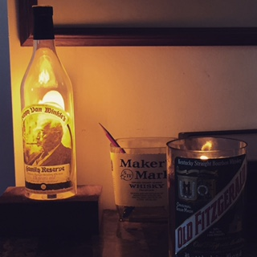
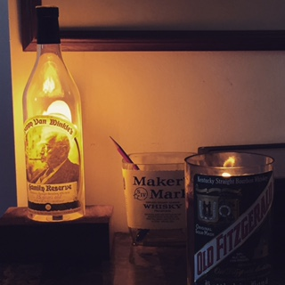
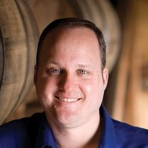
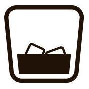

-
EPISODE
045
04.22.16
43:01
Chris Morris, Master Distiller at Woodford Reserve, gives an insight into the historic grounds and the $1000 Mint Julep in time for Derby. Read Show Notes
- Talk about your first memorable experience with bourbon. Good or Bad?
- Talk about your background and coming into the bourbon industry
- Let's talk about the Woodford grounds a little bit. It's held over 4 different names in the 200 years it's been existence.
- What makes your bourbon special or unique compared to others?
- There’s a misconception that Woodford is aged longer than Old Forester. Can you explain the differences?
- What is the future of distilling going to be? Is it a science or art form?
- You've been quoted as saying "Because we have a small distillery we use less sour mash than many distillers, which gives more fresh grain in every batch”. I know we can go to the liquor store and read a label that says Sour Mash bourbon but what does sour mash truly mean?
- You also ferment the mash for nearly twice as long as other distilleries, around 6 or 7 days when most usually do 3 or 4. Again talk about the role that plays.
- You do some unique experiments that are released yearly or even at the distillery. The latest masters select was called 1838 Style white Corn. Then there was another recent release called frosty four Wood. Talk about those.
- Choose your favorite child
- Talk about the process of the “Double Double Oaked”
- It is Derby season and Woodford has some affinity with horses. Talk about your ties to the horse racing industry
- Any favorite horse names over the years?
- With Derby time the drink of the season if the Mint Julep, talk about the $1000 Mint Julep
- I don’t know if this is fact or fiction, but is the ice actually flown in from a glacier?
- How do you get your hands on one?

-
EPISODE
044
04.14.16
45:52
Fred Noe, Global Ambassador and Master Distiller at Jim Beam, talks about the history of Jim Beam, his celebrity encounters and the new Booker’s Rye release. Read Show Notes
- This episode is brought to you by the Kentucky Bourbon Affair that will be taking place in Louisville and Kentucky Bourbon Trail Distilleries June 14-19th. Packed with exclusive content, rare tastings, special bottlings, amazing food, and for the first time a Whiskey Live show—the Kentucky Bourbon Affair is the ultimate fantasy camp for Bourbon lovers. For more information and tickets, visit www.kybourbonaffair.com.
- You were born into this. Talk about your child hood and some Beam history
- What are some things your dad taught you about this business and made you appreciate what you do today?
- Your role is not only a master distiller but also a brand ambassador, do you ever sleep?
- What’s the short list of some of your favorite places you’ve been?
- What do you think has made Jim Beam grow to the #1 product in the world?
- You've probably done a lot since then, best and worst jobs of working at the distillery?
- The latest Beam ads feature Mila Kunis. Talk about your interactions with Mila.
- A question from one of our listeners, what did you think of Mila when she blew up one of the rick houses in the latest ad?
- What’s the current state of Jim Beam today?
- As more engineering programs expand and more universities offer programs. Do you think the future of distilling is more science than art?
- There's a lot of different bourbons under your portfolio, who are some of your right hand people to make sure every brand stays consistent?
- Another question from one of our listeners, what is the inspiration behind the Signature Craft series?
- Talk about Booker’s Rye that will be hitting the shelves soon.
- If you have to start a journey for drinking Jim Beam bourbons to get to the point where you drinking Booker’s neat, where do you start?
- Lastly, we need to get the Kentucky Chew.

-
EPISODE
043
04.08.16
30:18
Patrick Hutchens, Owner of Promotional Wood Products, shares his company’s story of giving premium bourbons the extra edge. Read Show Notes
- Tell us about your first encounter with bourbon
- We’re sipping on a barrel of Knob Creek that you picked out. Tell us about it.
- What is Promotional Wood Products?
- How did the relationship form that you began to make all the boxes for every Booker’s?
- How has production scaled in Booker’s boxes over 22 years?
- Talk about how the scents of the Goose Island Rare box that you did
- What’s the process for making a box?
- How have you tried to perfect the manufacturing process?
- Talk about the process of the barrel heads
- Talk about the amount of moisture inside of the used barrel products
- Are wooden boxes today like the gimmick of the ceramic decanters of the 70s?
- Is your goal to have every bottle of bourbon out there in some wooden box?
- When you do put these items in boxes, do you really feel that you are making it a premium product?
- Any special release boxes coming out?

-
EPISODE
042
04.01.16
37:34

Matt Gandolfo, Brand Ambassador for Wild Turkey, talks history of the brand, non-GMO grains, each of the expressions and the new “Decades” release set for May 2016. Read Show Notes
- We kick off the show talking about one of our past guests, Marianne Barnes, and the new name for the Old Taylor Distillery.
- Tell us about your first encounter with bourbon
- Tell us about your role and what it consists of
- Why is Wild Turkey 101 and not 100?
- How did it grow to a business from 101?
- What did the name Austin Nichols mean to Wild Turkey?
- So why remove the name Austin Nichols from the brand?
- What are some of things during the process makes Wild Turkey unique compared to other brands?
- What does Non-GMO products give you in regards to quality?
- What’s it like hanging around Jimmy Russell?
- Talk about the individual expressions and the differences between each.
- Talk about the new release called “Decades" that will be coming in May 2016
- Is there something that holds true to the quote “Older turkey is better turkey”?
- If you have to have one Wild Turkey product on the shelf as a staple, which do you choose?

-
EPISODE
041
03.23.16
31:45
Brian Gelfo, Maker’s Mark Ambassador Extraordinaire & Bourbon Mafia Member, goes in depth about the Maker’s Mark Ambassador. Read Show Notes
- Markers Mark is now starting a “private barrel” program. But it’s more like a private blend program.
- What’s your story?
- Tell the listeners about your Maker’s Mark collection
- How do you get a hold of all the export bottles?
- What would you consider your most prized Marker’s Mark collectable?
- Explain to the listeners what the Marker’s Mark ambassadors program is
- How does someone sign up for the program?
- Is it free of charge?
- What are the benefits of being an ambassador?
- Give the listeners some idea of the best items Marker’s Mark has sent over the years to their ambassadors.
- what’s the process for going to pick up a bottle from your batch? Is it like the Willy Wonka golden ticket?
- What is life like for the Samuels outside of bourbon?
- What are some of your favorite Maker’s Mark events over the past decade?

-
EPISODE
040
03.16.16
32:49

Jackie Zykan, Master Bourbon Specialist for Old Forester, talks about each of the individual expressions and the history behind this Louisville based brand. Read Show Notes
- We are coming to you from Rye On Market in Louisville
- Tell us your coming to age of tale of bourbon
- What is it about Old Forester that made you leave working behind the bar
- Is Old Forester the same thing as Woodford Reserve?
- What do you actually do as a Master Bourbon Specialist?
- The name “Brown” has a stigma and prominence in Louisville. Talk about George Garvin Brown?
- Where is the 2nd “R” in the name?
- How did Old Forester move from sourcing to distilling it’s own stuff?
- How did Old Forester survive prohibition?
- Brown-Forman owns it’s own cooperage and what does that mean to you?
- Talk about each of the Old Forester brands and what makes each unique compared to the next
- What was the market reaction for the Whiskey Row edition?
- Give the listeners some kind of idea behind Birthday Bourbon
- What can you tell us about 2016 Birthday Bourbon
- Give us some of the more well-known cocktails you make

-
EPISODE
039
03.10.16
30:16
Rob Samuels, COO of Maker's Mark, talks about the operations behind Maker's and holding almost every job at the distillery since he was 9. Read Show Notes
- We kick off the show talking about bourbon tourism numbers from 2015
- Talk about your childhood and growing up in the family business
- What does the phrase mean “blow your ears off?”
- Maker's has a great relationship with Keeneland, talk about it.
- Where do you see Makers as a part of the growth of bourbon?
- What do you think kept Maker's alive 20-30 years ago when vodka was king?
- What are some your favorite ads Maker's has had over the years?
- This is a family business. What was the best piece of advice your father ever gave you?
- You started at the distillery at 9 years old. Talk about holding all those various positions over the years. Best and worst job
- How do you get on the tasting panel at Maker's?
- Back in 2013 was the great proof reduction debacle. Talk about that.
- What are some of toughest decisions you’ve had to make as COO?
- Let's talk about life outside of bourbon. Do you have any other hobbies?

-
EPISODE
038
03.02.16
32:29
Turner Moore, President of Whiskey Obsession Festival, joins the show to talk about the festival and what to expect this year. It takes place 3/30/2016-4/1/2016 in Sarasota Florida. Read Show Notes
- How did you get into bourbon or whiskey?
- Is there a certain bottle you would favor towards when you first began?
- Talk about your festival
- What do a lot of attendees coming away with at the end of the day and why do they love coming to your event?
- How does the panel session work?
- Talk about the tasting session and how you move from light to bolder flavor whiskies.
- What happens on the day of the main event?
- Where can you buy tickets?
- Talk about the cigar and whiskey pairing and what’s a good start for someone just beginning on that journey?
- Are any local distilleries going to be there?

-
EPISODE
037
02.19.16
30:09

(Part 2) Bernie Lubbers (@BernieLubbers), The Whiskey Professor and Brand Ambassador for Heaven Hill, continues in Part 2 talking about Heaven Hill bourbon brands, the removal of the 12 year Elijah Craig age statement and breaks out the guitar for a Bourbon Pursuit first. Read Show Notes
- Let’s talk about some of the brands from HH, because there are quite a few of them. But we will focus on the bourbon, of course. I’ll give you a name and you give us a fun fact or tidbit. (this is awesome! must listen part!)
- The cat is out of the bag. And it’s been the hot topic for the past week Elijah Craig is dropping the 12 year age statement and it’s going to be a blend of 8-12 years. You have a pretty firm stance on age statements. Talk about what that means to you
- What are the pros and cons of keeping and removing the the age statement?
- We wrap up the show with Bernie playing an original tune that has lots of different bourbons.

-
EPISODE
036
02.16.16
23:57
(Part 1) Bernie Lubbers (@BernieLubbers), The Whiskey Professor and Brand Ambassador for Heaven Hill, talks about his past, catchphrase, and overview of bourbon badges in Part 1.Read Show Notes
- Talk to us about how you first got into whiskey.
- You signature catchphrase or tagline is “Stay Bonded”. Tell the folks what you mean by that.
- http://www.whiskeyprof.com
- Bernie talks about the history of Bottled-in-bond
- Bernie talks about words on labels and how those are badges
- You do a lot of bourbon-related research. Is there something you’ve found that has fascinated you?
- Bernie talks about flavor profiles and how they are attained through distillation, aging, and yeast. How each distillery does something different.
- What’s the day in the life of Bernie for being a Brand Ambassador?
- Give us a 101 level rundown of why a bar needs three different labels of the same stuff.
- Stay Tuned for the next episode where we talk about the removal of the Elijah Craig age statement, dive into the individual brands, and also a solo guitar performance.
-
EPISODE
035
02.06.16
32:33
Seth Thompson, of The Bourbon Classic, chats about all the awesome events being held from Feb 23-27th, 2016 and how you can get last second tickets. Read Show Notes
- Tell us your story of how you got into bourbon?
- If your house is on fire, what’s the one bottle you grab?
- Give the high level pitch of The Bourbon Classic
- How has the event grown over the years?
- Let’s dive into the events. Talk about the key events on Friday and Saturday
- It’s awesome because consumers can take away knowledge about food pairings
- It looks like Saturday is the big day. Friday is the pre-game. Talk Saturday’s all day extravaganza
- Bourbon and ham pairings sound very intriguing
- If you’re coming from out of town, you can learn about Louisville’s Whiskey Row in a session with Mike Veach. Talk about that.
- Talk about The Classic Taste
- How much are tickets and how many are left?
- Talk about all the events leading up to the main events on Friday and Saturday
- Talk about the Van Winkle event that is sold out
- What are the added benefits of VIP tickets?
- Talk about the brands and distilleries that are going to be a part of the event.
- Any ideas for the 2017 event?

-
EPISODE
034
02.05.16
27:06

Chad Hartsfield, Owner of ReWicked Candles, discusses the process of turning old bourbon bottles into works of art. Read Show Notes
- Tell us your story of how you got into bourbon?
- Tell us about ReWicked Candles.
- What was the inspiration?
- How do you get around legal issues with brand names?
- Explain to us the process.
- How do you experiment with the scents in the wax?
- Where do you get all your bottles?
- What’s the reaction you get from bars or distilleries when you’re asking for empty bottles?
- How do you plan on keeping up with demand?
- Talk about the light fixtures and display cases your getting into
- What are you always on the look for when your picking or hunting?
- When did you start collecting bourbon?
- Any tips for dusty hunters?
- Do you barter for higher-end empty bottles?
- Where can people buy your products? Etsy Shop or chad@rewickedcandles.com
- Lets talk about the cost of the candles.
- What are the most popular candles?

 

-
EPISODE
033
01.19.16
31:12
Greg Davis, Master Distiller at Maker’s Mark, talks about how is continuing the tradition that has been set and more about day to day operations. Read Show Notes
- Today. we go on-site to Loretto to Maker’s Mark Distillery
- Breaking News: Users claim there is a bad batch of 2015 Elmer T. Lee. Barrels 256, 264, 266 and 267 are the “defective” barrels but Buffalo Trace has already responded.
- Tell us about your story
- What was your background before coming to Maker’s Mark?
- What are some of the key things you remember from your mentorship?
- Can you talk about your wheated mash bill and how it came to be?
- Talk about the difference between Makers and Makers 46
- Why go with French Oak?
- Are there other kinds of experimentation going on?
- Talk about the motivation behind the Cask Strength offering
- Talk about what you are doing different with your barrels compared to others
- How do you pick the barrels that are going into the batch?
- Do you sample every barrel?
- Are you able to go to different warehouses and taste the difference?
- How do you detect “must”?
- Can you explain what still you have and why you prefer it?
- What is the average bottle count that comes out of Makers?

-
EPISODE
032
12.17.15
37:15
Erik of @BourbonSeason joins the show to talk about the infamous bottle chase and the growing secondary market. Read Show Notes
- Before we get started, there is a new December release coming from Kentucky Owl so be on the lookout for red, blue, and green ink bottles soon.
- Erik, how did you get into bourbon?
- Tell us what you do with your twitter handle, @BourbonSeason
- There’s a lot of ways to get allocated bourbons, have you found a good formula for getting special release bourbons?
- Have you seen special hunting groups that have formed?
- Have you seen more camp out situations in other parts of the country?
- There’s camping, lotteries, and being a "best" customer but is there a fair way to distribute allocated bottles?
- In Louisville the secondary market is starting to take its effect. Small shops are selling bottles for secondary prices. Are you seeing this in other parts of the country as well?
- When you think about the secondary market there are fingers to point. Are people flipping the bottles or buying the bottles the culprit of the problem?
- How do you feel about seeing the flipper "crotch shot"?
- Some people on forums are selling 2 or 3 full verticals of Pappy or BTAC, so how are these people feeding the secondary market?
- In Louisville, we have a few restaurants that have fantastic selections, but they are price gouging. No question about it. Do you see restaurants as contributing to the secondary market as well?
- Are the distilleries going to start charging more to combat and make more money for themselves?
- This week, Buffalo Trace sent out an email responding to the mass inquiries about secondary market pricing and they intend on trying to shut down secondary markets. Can Buffalo Trace successfully shut it down?
- Would you like to see Buffalo Trace crack down on stores and restaurants that price gouge since the three-tier system is the only way a consumer can get a bottle?
- Quick PSA on breaking your empty bottles
- Is there such a thing as “bourbon karma”?
-
EPISODE
031
12.15.15
41:36
Reid Mitenbuler (@ReidMitenbuler), author of Bourbon Empire, joins Ryan and Kenny to talk about the history and psyche of bourbon, "a distinctive product of the United States". Read Show Notes
- The Frazier Museum has a new Prohibition exhibit that will become a new or even a first stop on the Kentucky Bourbon Trail.
- Reid, what’s your coming to age tale of bourbon?
- What made you so fascinated that you took the time to become an author on the subject?
- Talk about the misquote of bourbon being a “distinctive product of the United States”.
- Talk about the beginning with the “Big Bang of Bourbon”.
- In the book, you talk about myths behind the labels.
- Let’s jump ahead in history, there was a lot going on in 1964. Can you talk about what was going on during that time period?
- What was the result of The Bourbon Institute in overseas markets?
- There is a concept of marketing that has changed the way in what you think you’re drinking.
- You said (paraphrasing) “Rosenstiel presided over vicious consolidation rounds that made many distillers and brands extinct, but is also a part of the reason why many bourbons today taste as good as they do”. Talk about that. How come his name isn’t as prominent as EH Taylor for Bottled-in-Bond?
- How come we don’t see a bourbon or whiskey brand named Rosenstiel?
- Within the prologue, you talk about bourbon being a “comfort food”. Talk about that.
- If you want to buy Bourbon Empire, it’s available on Amazon.